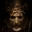

 Blasphemous 2
Detalles
 |
|
| Tiempo de juego | No Jugado |
| Última actividad | Nunca |
| Añadido | 11/6/2024 14:41:31 |
| Modificado | 11/8/2024 17:36:37 |
| Estado de finalización | No Jugado |
| Librería | Playnite |
| Fuente | 6TB STORE |
| Plataforma | PC (Windows) |
| Fecha de lanzamiento | 8/23/2023 |
| Puntuación de la Comunidad | 90 |
| Puntuación de la Crítica | 83 |
| Puntuación de usuario | |
| Género | Acción Aventura Indie |
| Desarrollador | The Game Kitchen |
| Editor | Team17 |
| Característica | Cloud Saves Compat. Total Con Mando Logros De Préstamo Familiar Un Jugador |
| Enlaces | Punto de encuentro Discusiones Guías Noticias Página de la tienda PCGamingWiki Logros |
| Tag | 2D Acción y aventura Aventura Buena trama Combate Desplazamiento lateral Difíciles Fantasía Finales múltiples Hack and slash Imperdonable Metroidvania Mitos y leyendas No lineales Pixelados Plataformas Plataformas 2D Rol de acción Terror Tipo «Dark Souls» |
Descripción
La segunda entrega de la saga Blasphemous trae de vuelta a El Penitente, con una historia que arranca tras los eventos narrados en el DLC gratuito Wounds of Eventide del juego original, donde se anunció el regreso del Milagro y se profetizó el nacimiento de un nuevo mesías.
Tras despertar en un lugar nuevo y extraño, interrumpiendo su descanso final, El Penitente vuelve a ser arrojado al interminable ciclo de vida, muerte y resurrección, sin más opción que explorar estas nuevas y peligrosas tierras para descubrir sus secretos, que han permanecido olvidados durante mucho tiempo.
Hordas de nuevos y grotescos enemigos se interpondrán en tu camino, aguardando el juicio final de la brutal mano de El Penitente. A estos enemigos se unirán imponentes y titánicos jefes finales que acechan en la oscuridad, a la espera de una oportunidad para mandarte de vuelta a la tumba de la que saliste.
Acabar con ellos no será fácil, pero Blasphemous 2 te ofrece más posibilidades para personalizar y mejorar un repertorio de nuevas y espectaculares habilidades, además de ampliar el arsenal de El Penitente con legendarias y devastadoras armas. Con tus ansias de justicia y furia infinitas, la victoria podría estar a tu alcance.
En última instancia, solo hay una cosa segura... La penitencia nunca termina.
Explora un mundo no lineal más completo y plagado de secretos
Después de despertar en un lugar desconocido, tu aventura comienza de nuevo inmersa en una serie de paisajes sublimes que evocan el viejo y oscuro encanto castellano, y que están plagados de trampas despiadadas. Tú decides cómo abordar este mundo laberíntico, no hay decisiones incorrectas, solo cuentas que zanjar.
Combate salvaje
El Penitente no tiene piedad y, con un repertorio inédito de armas que ofrecen nuevas habilidades, ejecuciones brutales y combos ampliados, se asegurará de que la destrucción caiga sobre cualquiera que se interponga en su camino.
Personaliza el progreso de tu aventura de nuevas maneras
Blasphemous 2 te ofrece la posibilidad de empuñar y mejorar un nuevo arsenal de armas con las que realizar ataques devastadores contra tus enemigos, y que además te brindan la oportunidad de personalizar y ampliar tu conjunto de habilidades básicas otorgándote nuevas formas de exploración.
Batallas épicas contra jefes finales inolvidables
Hordas de enemigos nunca vistos intentarán interponerse en tu camino. Nuevos y espectaculares jefes finales pertrechados con armas formidables pondrán a prueba tus habilidades con ataques letales y asoladores en combates únicos, épicos, que se resuelven en una escalada de tensión inolvidable.
Explora un mundo completamente nuevo
Te aguarda todo un mundo nuevo poblado de oscuros y carismáticos personajes con los que relacionarte. Algunos te ofrecerán su ayuda y otros te la pedirán. La mayoría te encomendarán misiones suicidas para conseguir preciadas reliquias olvidadas hace mucho tiempo. Con tantas cosas que ver y hacer, las historias y las leyendas que descubrirás te ayudarán a desentrañar los innumerables misterios del juego y te proporcionarán una comprensión más profunda de este enigmático mundo.
Tras despertar en un lugar nuevo y extraño, interrumpiendo su descanso final, El Penitente vuelve a ser arrojado al interminable ciclo de vida, muerte y resurrección, sin más opción que explorar estas nuevas y peligrosas tierras para descubrir sus secretos, que han permanecido olvidados durante mucho tiempo.
Hordas de nuevos y grotescos enemigos se interpondrán en tu camino, aguardando el juicio final de la brutal mano de El Penitente. A estos enemigos se unirán imponentes y titánicos jefes finales que acechan en la oscuridad, a la espera de una oportunidad para mandarte de vuelta a la tumba de la que saliste.
Acabar con ellos no será fácil, pero Blasphemous 2 te ofrece más posibilidades para personalizar y mejorar un repertorio de nuevas y espectaculares habilidades, además de ampliar el arsenal de El Penitente con legendarias y devastadoras armas. Con tus ansias de justicia y furia infinitas, la victoria podría estar a tu alcance.
En última instancia, solo hay una cosa segura... La penitencia nunca termina.
Explora un mundo no lineal más completo y plagado de secretos
Después de despertar en un lugar desconocido, tu aventura comienza de nuevo inmersa en una serie de paisajes sublimes que evocan el viejo y oscuro encanto castellano, y que están plagados de trampas despiadadas. Tú decides cómo abordar este mundo laberíntico, no hay decisiones incorrectas, solo cuentas que zanjar.
Combate salvaje
El Penitente no tiene piedad y, con un repertorio inédito de armas que ofrecen nuevas habilidades, ejecuciones brutales y combos ampliados, se asegurará de que la destrucción caiga sobre cualquiera que se interponga en su camino.
Personaliza el progreso de tu aventura de nuevas maneras
Blasphemous 2 te ofrece la posibilidad de empuñar y mejorar un nuevo arsenal de armas con las que realizar ataques devastadores contra tus enemigos, y que además te brindan la oportunidad de personalizar y ampliar tu conjunto de habilidades básicas otorgándote nuevas formas de exploración.
Batallas épicas contra jefes finales inolvidables
Hordas de enemigos nunca vistos intentarán interponerse en tu camino. Nuevos y espectaculares jefes finales pertrechados con armas formidables pondrán a prueba tus habilidades con ataques letales y asoladores en combates únicos, épicos, que se resuelven en una escalada de tensión inolvidable.
Explora un mundo completamente nuevo
Te aguarda todo un mundo nuevo poblado de oscuros y carismáticos personajes con los que relacionarte. Algunos te ofrecerán su ayuda y otros te la pedirán. La mayoría te encomendarán misiones suicidas para conseguir preciadas reliquias olvidadas hace mucho tiempo. Con tantas cosas que ver y hacer, las historias y las leyendas que descubrirás te ayudarán a desentrañar los innumerables misterios del juego y te proporcionarán una comprensión más profunda de este enigmático mundo.